День отлета. Немного побродили по ближайшему к аэропорту городку (пригород Дели), купили (!) картон для упаковки велосипедов.
На АЗС набрали в бутылки воды и более-менее нормально смогли вымоться в кустах.
В аэропорт пускают всего за 3 часа до отлета (по другим сведениям за 6), на входе проверяют документы и распечатку билета. Более, того у проверяющих есть распечатанные списки пассажиров на текущий день.
Говорят, что это одна из мер борьбы терроризмом, но после аэропорта Тель-Авива выглядит по меньшей мере смешно -)
Домой мы добирались также разными путями - с пересадкой в Дохе (Саша и Ваня) и Москве (Паша и Сережа). Полеты прошли без происшествий и без повреждения багажа.  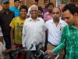 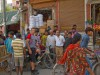 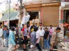 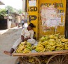 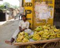 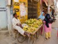 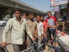 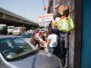
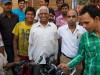 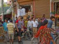 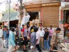 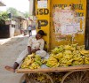 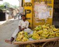 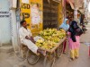 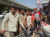 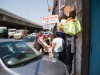  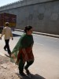 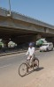 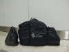
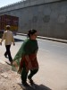 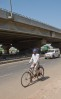 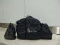
Так закончился наш гималайский экспресс.
Спасибо, если дочитали до конца.
Готовы ответить на все интересующие Вас вопросы.
Авторы отчета:
Павел Красников ( 3401156 [а] gmail.com ) - основной текст этой части отчета
Александр Кунеш ( kunesh [а] yandex.ru ) - дневниковые записи, фотографии, треки и небольшие дополнения к тексту
Кроме второй (этой) части отчета есть еще и первая, в которой вы найдете:
- Вместо предисловия
- Спортивный велопоход, маршрут и немного статистики
- Авиакомпания Катарские авиалинии и внутренний перелет в Индии
- Участники
- Подготовка к походу
- Что больше всего запомнилось
- Встречи в пути
- Как, вы не едете через Пакистан?!
- Улыбаемся и машем
- Еда
- Сушеный говяжий фарш
- Красный велосипед
- Эхо войны
- Езда по жаре
- Индийское дорожное движение
- Торговаться или нет?
- Сим-карты, телефоны, интернет, электричество
- Немного панорам
- Ссылки